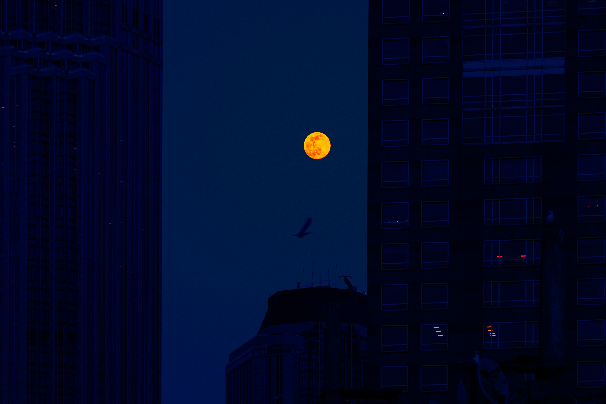

[ Kolay Seviye: Katmanların Ötesi ]

<img> etiketleri arasında yer almaz. CSS stil katmanlarının arkasına sızarlar.
F12) aç ve bu kartın (.secret-bg-card) arkasına gizlenmiş olan arka plan resminin adını bul!
İpucu: <style> bloğundaki background-image adresini incele.